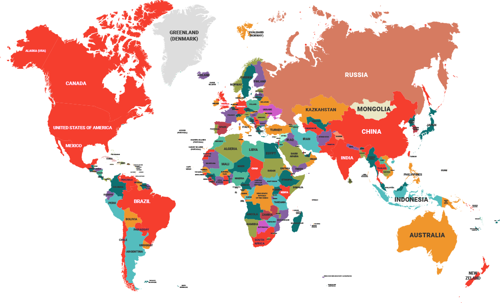

Notícias
Formas de Contágios
O atual agente patogênico, porém, é suficientemente contagioso para passar de um punhado de casos em dezembro a uma pandemia mundial em março. Calcula-se que cada pessoa infectada transmita o vírus a outras duas ou três.
Saiba MaisFilas em hospitais públicos têm causas complexas
É comum nos serviços de emergências de hospitais a utilização de técnicas de gestões empresariais e industriais para organizar o fluxo de pacientes.
Saiba MaisCoronavírus: como é o isolamento intermitente proposto por israelenses
À medida que as novas infecções e mortes por coronavírus começam a diminuir em alguns países como Itália, Espanha, Israel, entre outros. O mundo começa a se perguntar como relaxar, de forma segura, o lockdown e as medidas de distanciamento social.
Saiba MaisSintomas do Coronavirus
Saiba mais sobre o Coronavirus
É possível estar com a COVID-19 por até 14 dias antes de apresentar os sintomas, que são febre, cansaço e tosse seca. A maioria das pessoas (cerca de 80%) se recupera da doença sem a necessidade de tratamentos especiais. Em casos mais raros, ela pode ser grave e até fatal. Idosos e pessoas com outras condições médicas (como asma, diabetes e doença cardíaca) são mais vulneráveis a quadros sérios.
Fonte
Tosse
Febre
Cansaço
Dificuldade de Respirar
Estatísticas do Covid- 19
| No | País | Confirmados | Recuperados | Mortes |
|---|---|---|---|---|
| 1 |  |
712.184 | 59.532 | 32.823 |
| 2 |  |
172.434 | 42.727 | 22.745 |
| 3 |  |
192.282 | 74.662 | 20.162 |
| 4 |  |
82.719 | 77.029 | 4.632 |
| 5 |  |
34.221 | 14.026 | 2.171 |
Fonte
